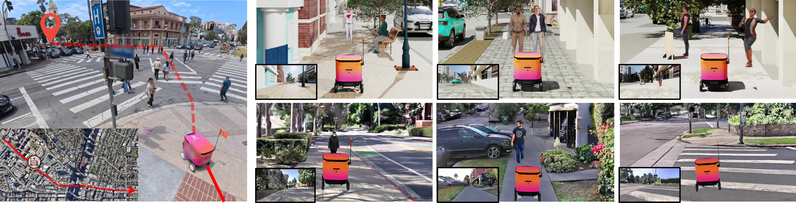
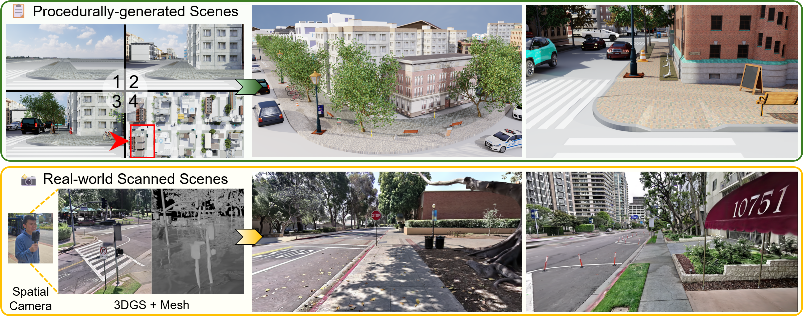
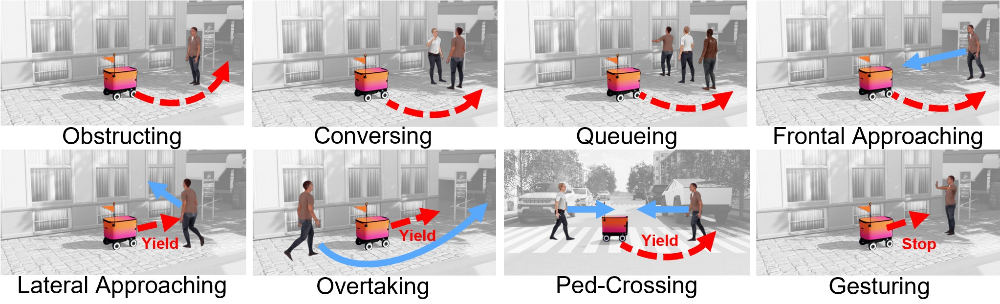
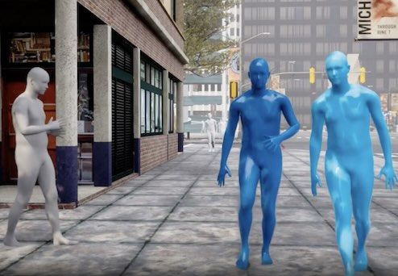
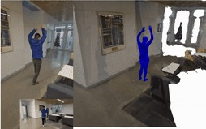

SidewalkBench: Benchmarking Visual Navigation on Urban Sidewalks
Zhizheng Liu 1, * , Honglin He 1, * , Vivek Alumootil 1, *
Akshat Pandya 2 , Brad Squicciarini 2 , Wayne Wu 1 , Bolei Zhou 1
1 University of California, Los Angeles , 2 Coco Robotics , * Equal Contribution

Safely navigating complex city streets remains a significant challenge: robots must traverse long distances with varied layouts, avoid static obstacles, and interact safely with dynamic pedestrians. While recent visual navigation models offer promising solutions, the lack of a unified benchmark has hindered quantitative and reproducible evaluation. SidewalkBench bridges this gap with a comprehensive simulation platform for standardized model evaluation.
TL;DR
- SidewalkBench is a comprehensive benchmark for visual navigation on urban sidewalks, built upon NVIDIA Isaac Sim with GPU-accelerated simulation of diverse, high-fidelity sidewalk environments.
1. We introduce two complementary scene types: procedurally generated scenes (100 environments of 2km×2km) with diverse sidewalk structures and layouts, and real-world scanned scenes (11 scenes from 3DGS) with photorealistic visual appearance and geometry.
2. We develop a two-level pedestrian simulation system with event-based high-level behaviors for standardized human-robot interaction testing and a new SMPL-based animation pipeline that achieves a 60x rendering efficiency improvement over prior work.
3. We benchmark 9 representative visual navigation models across 330 unit-test, 800 pedestrian-reactive, and 105 long-horizon scenarios. Key findings: scaling sidewalk data is critical; pedestrian interaction and long-horizon robustness remain bottlenecks; synthetic data finetuning is a promising solution.
SidewalkBench Overview

SidewalkBench is built on NVIDIA Isaac Sim, leveraging GPU-accelerated physics and realistic camera rendering. It includes two complementary scene types:
(1) Procedurally Generated Scenes: We define 7 primitive block types (straight, curve, intersection, etc.) and connect them via spline-based routing to form continuous urban topologies. Each block is divided into 5 functional zones (roads, sidewalks, curbs, road verges, frontage zones) with randomized layouts. We leverage UrbanVerse-100K, a large-scale urban asset database, to populate scenes with diverse sky HDRIs, ground textures, and static objects. This yields 100 large-scale environments, each covering 2 km×2 km.
(2) Real-world Scanned Scenes: Using a XGRIDS spatial camera with LiDAR and four cameras, we scan and reconstruct street blocks with photorealistic 3DGS appearance and accurate mesh geometry. We collect 11 real-world scanned scenes with an average scale of 150 m×150 m, annotated with sidewalk and crosswalk regions.
Pedestrian Simulation

SidewalkBench adopts a two-level approach for pedestrian simulation:
(1) Event-based High-level Behaviors: We classify common sidewalk interaction behaviors (obstructing, conversing, queueing, frontal/lateral approaching, overtaking, ped-crossing, gesturing), each triggered by the pedestrian’s relative position to the robot via a behavior state machine. This enables standardized, reproducible human-interactive scenarios.
(2) Flexible and Efficient Low-level Animation: We represent all pedestrians using the SMPL human body model, enabling full motion control via human motion generation models and datasets. Our custom Nvdiffrast-based pedestrian renderer achieves a 60x improvement in rendering efficiency compared to the native Isaac Sim human animation module, enabling large-scale evaluation in parallel environments.
Unit-test Scenarios
Unit-test scenarios evaluate model performance across three basic sidewalk structures. All videos are played at 4× speed.
Straight
Procedurally Generated
Real-world Scanned
Curve
Procedurally Generated
Real-world Scanned
Crosswalk
Procedurally Generated
Real-world Scanned
Pedestrian-reactive Scenarios
We evaluate 8 types of event-based pedestrian behaviors in procedurally generated scenes. All videos are played at 4× speed.
Obstructing
Conversing
Queueing
Frontal Approaching
Lateral Approaching
Overtaking
Ped-Crossing
Gesturing
Long-horizon Scenarios
Long-horizon scenarios require traversing large-scale environments (>100m start-to-goal distance). All videos are played at 4× speed.
Procedurally Generated
Real-world Scanned
Finetuning from Synthetic Data
Our simulation platform can serve as a scalable synthetic data generator for model finetuning. All videos are played at 4× speed.
Ped-Crossing
Before Finetuning
After Finetuning
Gesturing
Before Finetuning
After Finetuning
Additional Demos
Other Robot Embodiments
Visualization of Real-world Scanned Scenes
Reference
@article{liu2026sidewalkbench,
title={SidewalkBench: Benchmarking Visual Navigation on Urban Sidewalks},
author={Liu, Zhizheng and He, Honglin and Alumootil, Vivek and Pandya, Akshat and Squicciarini, Brad and Wu, Wayne and Zhou, Bolei},
journal={arXiv preprint},
year={2026},
}
Relevant Work


Comment: This work proposes a method JOSH for reconstructing global human motion and the surrounding environment from in-the-wild videos. We can use JOSH to reconstruct novel pedestrian motion like a stopping gesture and directly use it in SidewalkBench.
Comment: This work proposes a model PedGen for context-aware pedestrian movement generation from pseudo-labels of web videos. We can use PedGen to generate diverse pedestrian movements in SidewalkBench.